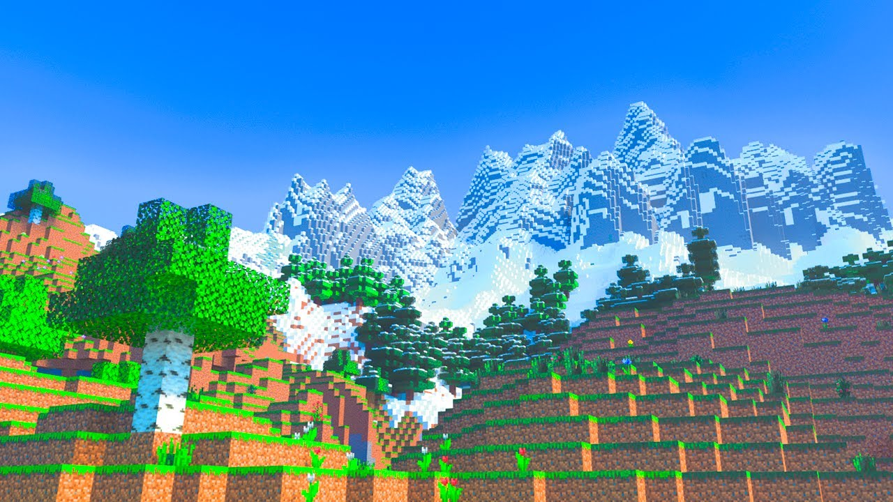

Biomas y dimensiones de Minecraft
Biomas principales
Los biomas son regiones con clima, vegetación y criaturas específicas:
- Bosque: Árboles variados, flores y animales como vacas, cerdos y pollos.
- Desierto: Arena, cactus, templos del desierto y poca agua.
- Tundra / Taiga: Clima frío, nieve, lobos y aldeas de nieve.
- Selva: Árboles gigantes, lianas, ocelotes y templos ocultos.
- Océano: Agua profunda, delfines, peces y naufragios.
Dimensiones especiales
Minecraft cuenta con tres dimensiones principales:
- Mundo Normal: El mundo principal, lleno de biomas, aldeas y minas.
- Nether: Mundo infernal lleno de lava, fortalezas, mobs peligrosos y recursos especiales.
- End: Dimensión final donde habita el dragón del End y los Shulkers.
Biomas raros y extremos
- Mesa: Montañas de arcilla de colores y minas abandonadas.
- Pantano: Agua fangosa, slimes y árboles con enredaderas.
- Montañas y mesetas: Altas cimas que permiten vistas espectaculares y minas de minerales raros.